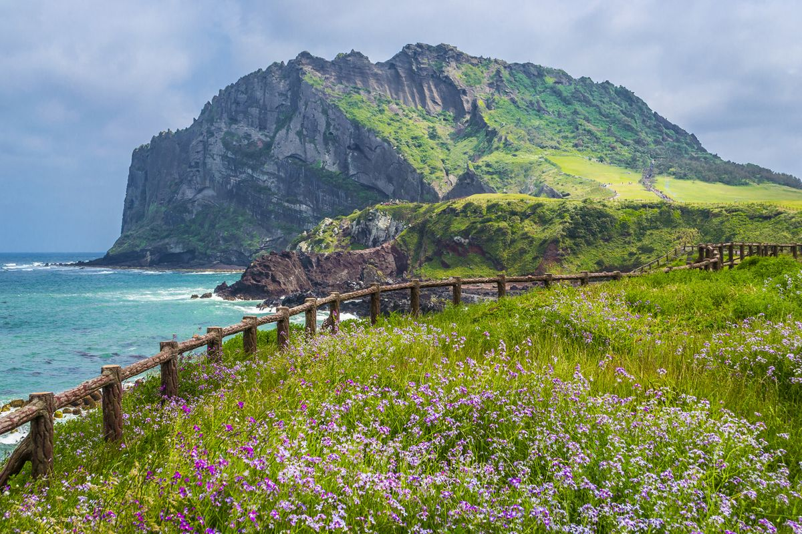

Pulau Jeju
Menurut catatan sejarah Cina kuno, San Guo Zhi, pada abad ke-3 Masehi, Pulau Jeju adalah sebuah kerajaan independen yang bernama Tamra. Pada saat itu Tamra sudah menjalin hubungan dagang dengan Tiga Negara Han di Semenanjung Korea. Dari abad ke-5 sampai 9, Tamra juga menjalin hubungan dagang dengan kerajaan Goguryeo, Silla, Dinasti Tang dan Jepang. Tahun 1105, Tamra diserap dalam teritori Dinasti Goryeo pada masa pemerintahan Raja Gojong (bertahta 1215-1259) dan namanya diganti menjadi Jeju ("daerah"). Dengan masuknya Jeju dalam teritori Goryeo, sumber daya alam Jeju diperas demi memberi upeti kepada istana sehingga beberapa kali rakyat Jeju melakukan pemberontakan. Pada tahun 1270, Tiga Polisi Elit (Sambyeolcho) dibantu oleh rakyat Jeju memberontak pada pemerintahan setempat dan penguasa Mongol, namun berhasil dipatahkan. Para penguasa Mongol memilih Jeju sebagai pangkalan untuk menyerbu ke Jepang. Di pulau ini mereka menternakkan kuda, membuat kapal perang dan mendirikan kuil Buddha bernama Beobhwasa. Pada periode Dinasti Joseon (1392-1910), kaum penguasa memandang Jeju sebagai daerah perbatasan. Rakyat di daratan utama umumnya menganggap Jeju sebagai tempat asing di mana narapidana dibuang atau diasingkan. Pada abad ke-17, Raja Injo bahkan membuat peraturan bahwa rakyat Jeju dilarang pergi ke daratan utama. Peraturan ini bertahan hampir 200 tahun sampai dihapuskannya pada abad ke-19. Akibatnya, rakyat Jeju sangat terisolasi dari dunia luar.